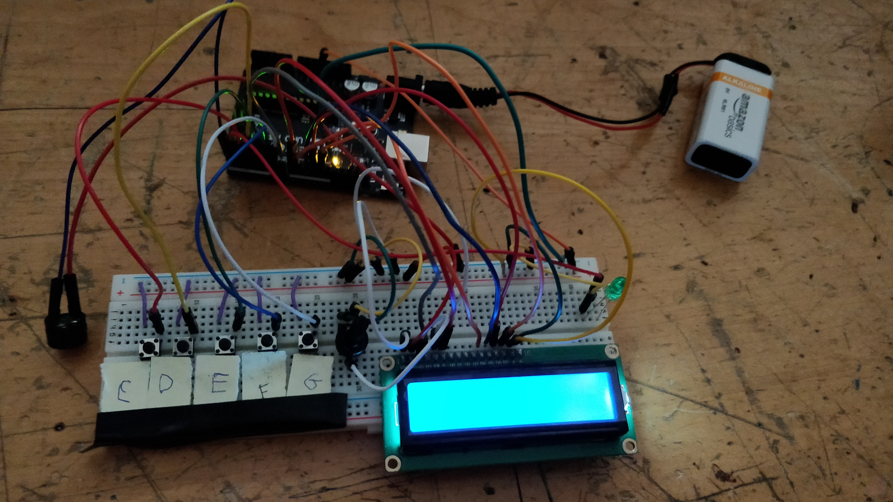

Arduino Culminating
Arduino Culminating

For our culminating Arduino project, we made a game called Just Play. The goal of Just Play is to score the most points by correctly pressing the buttons that are displayed on the screen. Each button is assigned a note (from C4 to G4). When the player correctly presses the button on the screen, the buzzer plays the note, the green LED lights up, and the player earns a point. The more notes that the player plays correctly, the higher their point count. At the end of the song, the player sees their score and can restart the program to start another song by pressing any button. We used an LCD, buttons, an LED and a buzzer to create out project. For more information on our project, view our reference manual here. (note that a PDSB account is required to view the reference manual.)
Arduino Learning Process
The Arduino unit in computer engineering has been very educational. I’ve always wanted the chance to work with Arduino due to high reputation that the technology has. I learned a lot about how serial communication works between devices (between the Arduino and my laptop). I also learned how different devices can be controlled by sending them signals (e.g. HIGH and LOW signals to LEDs and buttons, integer tones to buzzers).
I enjoyed experimenting with different components and making them react with each other, like making a buzzer sound when a button was pressed. I also enjoyed using my creativity to expand on the lessons and examples, like how I made Back to the Future sound on the buzzer (shown in the video below). However, my favourite part of Arduino was programming the devices in the circuits I built. It was neat seeing another version of “robot programming” since I have previously programmed for FRC using Java.
I disliked how Arduino was difficult to troubleshoot. Often I would run into an error and it was impossible to know the direct source, so I had to test each individual component and look through the software. I felt that this was a waste of time and since Arduino is made for beginners, they could have added more helpful error messages. Arduino’s IDE was very unhelpful in finding errors live, unlike almost every other IDE that I’ve used. Coding errors could only be found on verification or uploading, and even then each error would have to be solved one at a time. Furthermore, Arduino had a tendency to change to change communication ports after replugging into my laptop. This meant I had to manually change the communication port in the IDE’s settings. This quickly became tedious to do.
I want to learn how Arduino works with other modules and devices. I would love to connect the Arduino’s sensor data with an Android phone application. Furthermore, I would like to experiment with more complex interfacing devices, such as a Raspberry Pi. Overall, this unit was a good introduction to computer interfacing, and I definitely plan on learning more in the future.